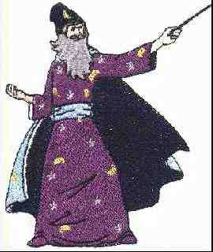
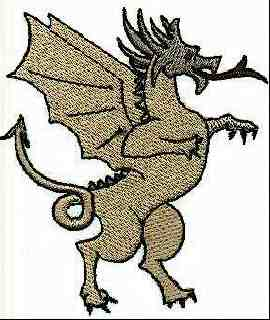
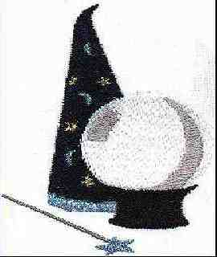
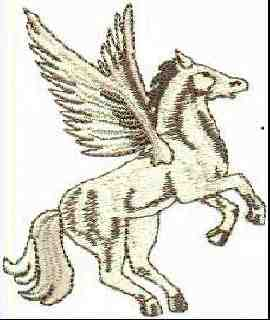
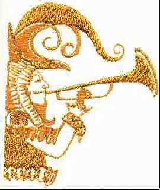
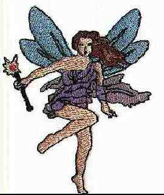
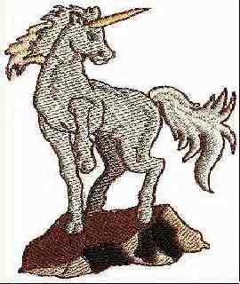

Jokes
makes you laugh
And If you will laugh
you will have A long life!

Read
Purna Mohanty
in Joke No 1
He Explains
The definition of
Kiss for U !!

And Here is
another guide
to India - Joke 2

Click Here To Send
Mail To Us

Read More Jokes
3 4 5 6 ....
All for You ??

Join the Java revolution

This is Cute
Is not it ??